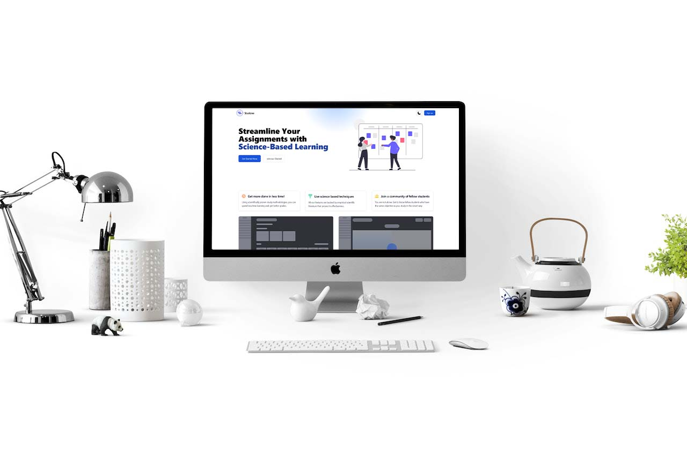

Studone
20 June 2023 NEW
Study enhancement web application.
by Ruben Stanciu
- Tech stack:
- Typescript
- Next
- Sql
- Tailwind

How it started
This app idea wasn't mine. A few months ago, I met a stranger from the other side of the globe on a Discord server. He had this vision of an app that helps students learn more efficiently and organize their time so that they can spend less time learning. I thought that it was a cool idea, so I joined to create an MVP and test it out. The purpose of this app is to give the user multiple attested learning techniques and group them under one umbrella while keeping it simple. There are many productivity apps of this type; the most famous one is Notion. While Notion offers tools to use the same learning techniques as Studone, it's much harder to set up. Studone has all of these features right out of the box. So with the motivation to help students and create useful software, our journey started with designing and developing the MVP.
Main Features
The MVP has four main learning methods: learning
using flashcards based on active recall, quiz-type
learning where you get a multiple-choice answer,
filling out missing parts of mindmaps, and writing
summaries and then filling out missing words from
summaries. The MVP provides a text editor to write
notes with text highlight capabilities.
All these methods are organized by topics and
subjects. Each topic has a name, a number of days
between exercises, and an expiration date. This
topic refers to a set of data containing the methods
mentioned above as well as editors for each method.
All the topics are shown as an overview in the
dashboard calendar, so whenever a user logs in, he
or she sees immediately what the topics for today
are, as well as an overview of the current month.
App Structure
Backend
The backend is made with Next and served by Ngnix in a Linux environment. Using Next comes with an out-of-the-box setup, which makes API development effortless. The API has three base routes: /auth for authentication, /data/[dataype] for CRUD operations with the app data, and /payments for payments.
Authentication
Next comes with Next-Auth, which is by far the easiest type of user authentication I have ever implemented in a web app. It is easy to understand and fast. But it comes with its downsides; for example, the sign-in function runs on every page request, and because Next uses a per-page router, it makes the app navigation slower than it should. This problem caused me to revert back to a React router to avoid checking the payment status between app screens, which makes the whole Next router kind of useless.
Payments
In this app, I have Implemented a subscription solution with PayPal. It was the first time I implemented real payment into a website, and the integration process took me a while to understand. In part because of the way information is organized in the PayPal documentation and because of my lack of experience. But in the end, I figured it out, which gives me more confidence in my abilities.
Landing page
Since this version of the app is only an MVP, we didn't want to invest any money, so I came up with the design for the landing page. I definitely wouldn't consider myself even close to a designer, but I still made this design with the design principles I already knew (e.g., spacing, hierarchy, contrast). And I can't complain too much about the outcome; it fits the style we went for, but it could be improved without a doubt. After the hard part was done, putting it into code was a piece of cake with the Next and Tailwind combination. Also because Tailwind is the fastest way to write CSS, in my opinion.
Client
By far the most challenging part of the project. The client incorporates many third-party libraries for the various UI tasks that it needs to accomplish. And while saving time on those tasks, the libraries still require a lot of polishing to become part of the app in a way that doesn't feel strange. The component library used is Flowbite, which is a Tailwind-based UI library with minimalistic components.
Conclusion
The app in its current state is not market-ready. It requires a lot of polishing and many more features, which we plan to add in the long run. With that said, I have learned a ton of things working on this web application. I learned about time management, the importance of modularization, collaboration with other programmers, and how vital unit tests are. I'm glad about this experience and would love to see this product out there providing value to students.